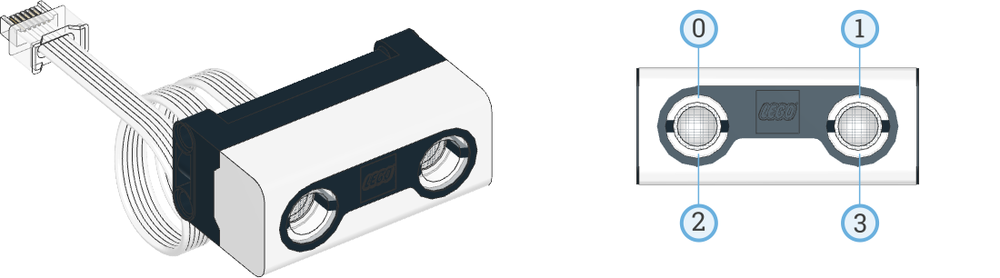

| ✅ | ✅ | ✅ | ✅ | ✅ | ✅ | ❌ |
|---|
Ultrasonic Sensor

- class UltrasonicSensor(port)
LEGO® SPIKE 超音波センサー。
- Parameters:
port (Port) – センサーを接続するポート。
- await distance() int: mm
超音波を使って、センサーと物体の間の距離を測定します。
- Returns:
測定された距離。有効な距離が測定できなかった場合は 2000 mm を返します。
内蔵ライト
このセンサーには4つの内蔵ライトがあります。それぞれのライトの輝度を 調整できます。
使用例
距離を測定してライトを点灯する
from pybricks.parameters import Port
from pybricks.pupdevices import UltrasonicSensor
from pybricks.tools import wait
# Initialize the sensor.
eyes = UltrasonicSensor(Port.A)
while True:
# Print the measured distance.
print(eyes.distance())
# If an object is detected closer than 500mm:
if eyes.distance() < 500:
# Turn the lights on.
eyes.lights.on(100)
else:
# Turn the lights off.
eyes.lights.off()
# Wait some time so we can read what is printed.
wait(100)
ライトの輝度を徐々に変化させる
from pybricks.parameters import Port
from pybricks.pupdevices import UltrasonicSensor
from pybricks.tools import StopWatch, wait
from umath import pi, sin
# Initialize the sensor.
eyes = UltrasonicSensor(Port.A)
# Initialize a timer.
watch = StopWatch()
# We want one full light cycle to last three seconds.
PERIOD = 3000
while True:
# The phase is where we are in the unit circle now.
phase = watch.time() / PERIOD * 2 * pi
# Each light follows a sine wave with a mean of 50, with an amplitude of 50.
# We offset this sine wave by 90 degrees for each light, so that all the
# lights do something different.
brightness = [sin(phase + offset * pi / 2) * 50 + 50 for offset in range(4)]
# Set the brightness values for all lights.
eyes.lights.on(brightness)
# Wait some time.
wait(50)